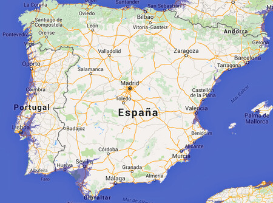

El retroceso del deshielo
| Región | Periodo | Reducción |
|---|---|---|
| Ártico | 1980-2020 | -44% |
| Groenlandia | 1990-2020 | -8.8% |
| Glaciares Alpinos | 1900-2020 | -60% |
La biodiversidad, la principal afectada
Destruir hábitats cruciales como el hielo marino para osos polares y focas, y al alterar ecosistemas marinos y terrestres por el aumento de sedimentos, cambios en la temperatura del agua, y la liberación de microorganismos patógenos del permafrost, lo que eleva el riesgo de extinción de especies y la alteración de cadenas alimentarias y ciclos naturales.
